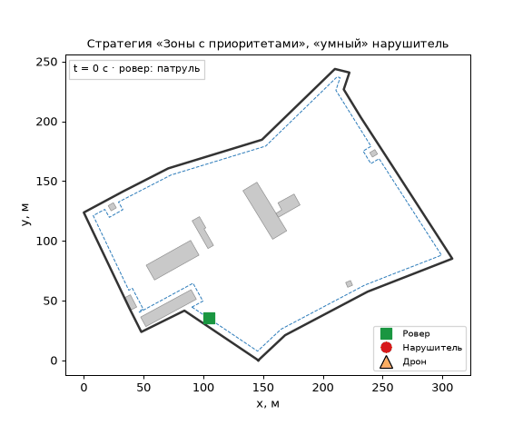
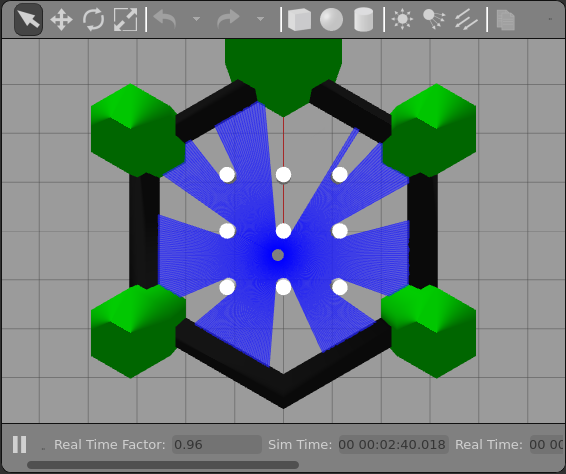
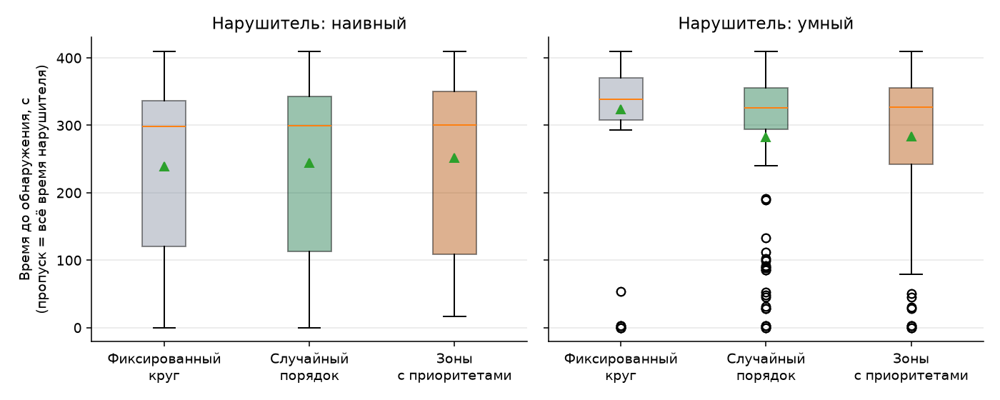
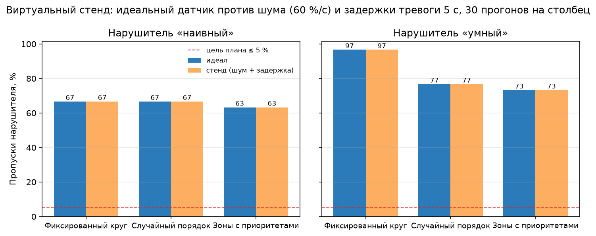

Автономный патрульный: охрана периметра
Школьный исследовательский проект «Сириус.Лето». Вопрос проекта: как должен ездить ровер-охранник вдоль забора, чтобы нарушитель был обнаружен быстрее всего, и помогает ли ему дрон.

Как это работает
- Забор и здания взяты из OpenStreetMap; вдоль забора проложена дорога патруля с контрольными точками.
- Участки у ворот, за зданиями и в темноте «опаснее» — туда нарушитель лезет чаще.
- Ровер выбирает следующую точку по одной из трёх стратегий: всегда по кругу, случайно или чаще к опасным участкам.
- «Наивный» нарушитель приходит в случайный момент, «умный» — сразу после того, как ровер уехал.
- Тепловизор ровера замечает человека, если тот близко и не закрыт зданием; по тревоге взлетает дрон.
- Тысячи прогонов с одинаковыми условиями для всех стратегий дают таблицы, графики и статистические критерии.


/drone/goto).Результаты
| Критерий из плана | Цель | Получено |
|---|---|---|
| Симуляций в эксперименте | ≥ 240 | 240 по плану, 3960 всего |
| Выигрыш лучшей стратегии против круга («умный» нарушитель) | ≥ 35 % | 13 % (различие значимо) |
| Ускорение подтверждения тревоги дроном | ≥ 2 раз | 0,82 раза, но простой ровера 62 → 5 с |
| Пропуски у лучшей стратегии | ≤ 5 % | 72–76 % одним ровером; 3 ровера: у круга 0 % |
Гипотеза в исходной формулировке не подтвердилась: одному роверу не хватает скорости на периметр такого размера. Это тоже результат: он показывает, сколько роверов или датчиков нужно на самом деле.



Ограничения
Все результаты получены в симуляции. Поведение нарушителя упрощено, погода и помехи связи не моделируются. В Gazebo проверена работа узла стратегии на учебном мире TurtleBot3 (точки площадки уменьшены в масштабе), а не на модели реального объекта.